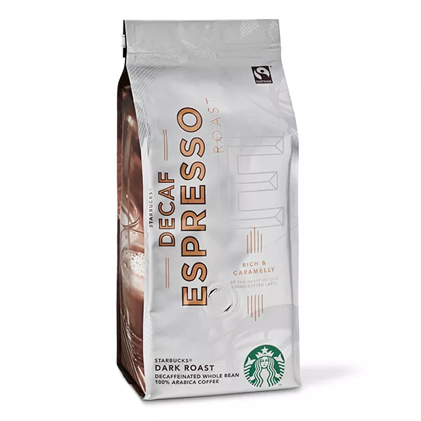

Onze koffie
Onze Koffie
Bij Starbucks gaat het sinds het begin al om de kwaliteit van de koffie. Onze passie voor koffie wordt alleen overtroffen door onze liefde om het te delen.
Of je nu thuis geniet van een momentje voor jezelf of samen met gasten een nieuwe zak koffiebonen opentrekt het is altijd een ervaring, een explosie van aroma en een gevoel van thuiskomen.
Met zoveel Starbucks koffiebonen om uit te kiezen is het moeilijk om jouw persoonlijke perfecte kop te vinden. We hebben je graag opweg.
Het Starbucks Roast Spectrum
Onze koffies zijn ingedeeld op basis van drie brandprofielen: Blond, Medium en Dark, zodat je de smaak en intensiteit kunt vinden die bij je past.
Blonde Roasts Starbucks® Blonde Roast-koffie is het minst lang gebrand en heeft daardoor een zachte en lichtzoete smaak. Het is een benaderbare en smaakvolle kop koffie met lichte hints van de branding.
Medium Roast Smooth en gebalanceerd, onze medium roasts zijn perfect voor elke koffiemomentje.
Dark Roast Deze koffies zijn krachtiger door het lange brandingsproces. De robuuste smaken komen naar voren door de intense branding en produceren een koffie met rijke en volle smaken.
-
Starbucks Blonde Roast
 Blonde Roast
Blonde Roast
-
Colombia Nariño
 Medium Roast
Medium Roast
-
Pike Place
 Medium Roast
Medium Roast
-
Guatemala
 Medium Roast
Medium Roast
-
House Blend
 Medium Roast
Medium Roast
-
Ethiopia
 Medium Roast
Medium Roast
-
Kenya
Medium Roast -
Sumatra
 Dark Roast
Dark Roast
-
Caffe Verona
 Dark Roast
Dark Roast
-
Decaf Espresso Roast
 Dark Roast -
Espresso Roast
 Dark Roast
Dark Roast
Hoe maak je de perfecte kop koffie?
Wellicht heb je er nog niet aan gedacht, maar wist je dat de verschillende brouwmethoden binnen Starbucks allemaal andere smaken in de koffie naar voren brengen. Laat onze kennis je helpen om de volle potentie te ontgrendelen van jouw favoriete koffie - voor de perfecte kop, elke keer opnieuw.

Coffee press
Brewing with a coffee press retains the precious natural oils that paper filters absorb, and extracts the coffee’s full flavour while giving it a consistency that’s thick and rich.
-
Grind and measure
Remember, coffee is like produce. Buy it often in small quantities to enjoy it at the peak of freshness.
TIP: Remember, coffee is like produce. Buy it often in small quantities to enjoy it at the peak of freshness. -
dd hot water
To give your coffee the best possible flavour, use filtered or bottled water.
TIP: To give your coffee the best possible flavour, use filtered or bottled water. -
Place plunger and brew
Put the plunger back on the press without pushing it down, and let the coffee brew for 4 minutes.
-
Press and pour
Gently push down the plunger until it reaches the bottom of the press, and enjoy

Pour-over
Pour-over is a beautifully simple and accessible way to brew a single cup of coffee with clean, fully developed flavour and body.
-
Measure and boil
Measure as much water as you’re going to use to brew, plus a little extra for rinsing the filter, and bring it to a boil.
-
Pre-moisten filter
Briefly rinse the paper filter with hot water, and discard the rinse water. This will give your coffee the purest flavour possible.
-
Measure and grind
Next, measure your coffee. For pour-over, use coffee ground for a paper cone. It’s a relatively fine grind that looks like granulated sugar. Measure 2 tablespoons of coffee per 6 ounces of water.
-
Pour and pause
Use hot water that’s just off the boil and fill the cone halfway to saturate the grounds. Pause for 10 seconds and let the coffee bloom. This allows the coffee to hydrate evenly and begin to develop flavour.
-
Complete the pour and enjoy
To make your pour-over more consistent, use a timer. It should take about 3 minutes to make a cup.
TIP: To make your pour-over more consistent, use a timer. It should take about 3 minutes to make a cup.

Iced Pour-Over
Iced pour-over is a simple and approachable way to make rich, full-flavoured iced coffee one pitcher at a time.
-
Pre-moisten filter
Briefly rinse the paper filter with hot water, and discard the rinse water. This will give your coffee the purest flavour possible.
-
Choose the right grind
For pour-over, use coffee ground for a paper cone. It’s a relatively fine grind that looks like granulated sugar.
-
Measure
Iced pour-over is brewed at double strength and diluted with ice, so measure 4 tablespoons of coffee for every 6 ounces of hot water.
-
Pour and pause
Use hot water that’s just off the boil and fill the cone halfway to saturate the grounds. Pause for 10 seconds and let the coffee bloom. This lets it hydrate evenly and begin to develop flavour.
-
Complete the pour
Slowly add the rest of the water, pouring in small, steady circles to cover all the grounds.
-
Add ice
African coffees are popular for iced pour-over because of their superb juicy body, and tangy, sparkling citrus notes.
TIP: African coffees are popular for iced pour-over because of their superb juicy body, and tangy, sparkling citrus notes.

Coffee Brewer
Drip coffee is a convenient way to make great coffee. With the right grind and pure water, you can brew a fantastic cup of coffee in a coffee brewer.
-
Choose the right grind
For a flat bottom filter, use a medium grind that resembles sea salt. Cone filters use a finer grind that resembles granulated sugar.
-
Measure
Use 2 tablespoons of freshly ground coffee for every 6 ounces of water.
-
Brew and enjoy
TIP: Brewed coffee is always best fresh, so make as much as you’ll enjoy in a sitting. Reheating coffee can dull the flavour.